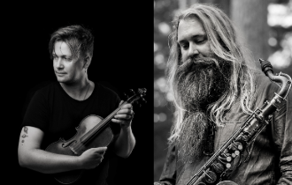
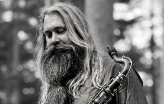
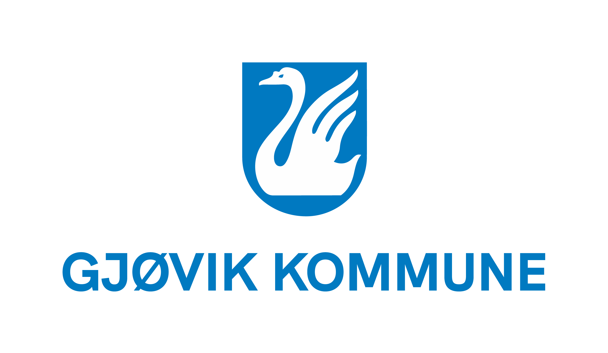
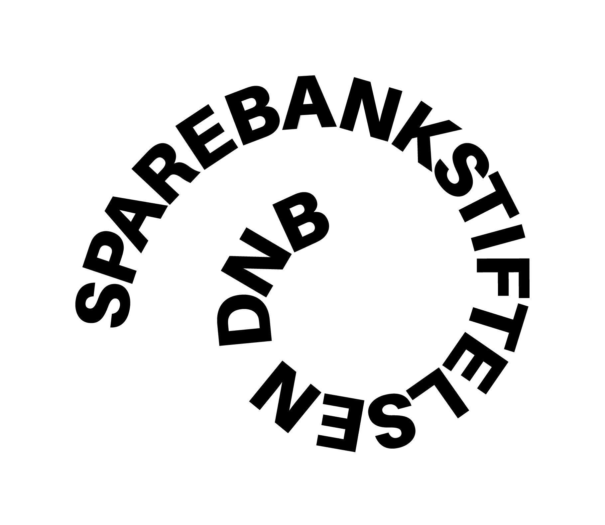
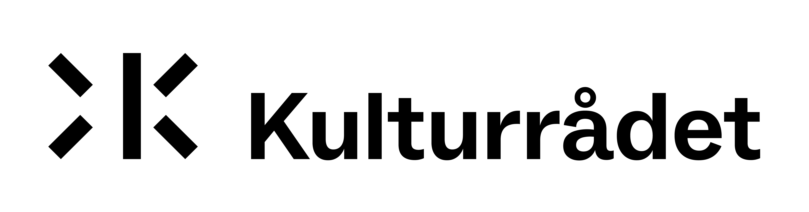
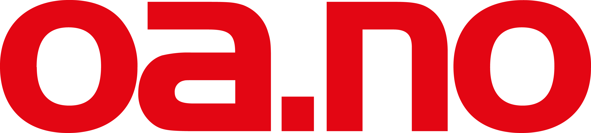
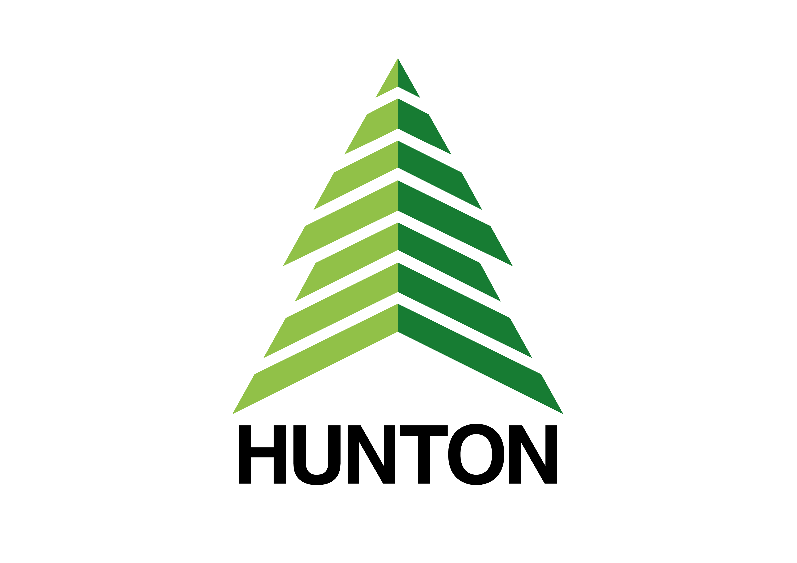

Sesong 2026
Jubileum
Levende orkester, tett på publikum
Profesjonelt strykeensemble som spiller der folk bor — i hele Innlandet.
Se programmet →
Neste konserter
Neste konserter
Alle konserter →
2026
23
september
Kl 19.00
Orkester Innlandet & Trygve Seim
Onsdag 23. september kl 19.00, Rudi gard
Orkester Innlandet feirer 35 år i musikkens tjeneste! Med vår kunstneriske leder Atle Sponberg i spissen for 16 strykere, inviterer vi til en konsert hvor du både får servert kjente og kjære klassiske perler og innslag hvor vi utfordrer det tradisjonelle. Vi byr på favoritter fra vårt brede sjangermessige repertoar. Bli med på en kveld fylt med musikalske overraskelser og stor stemning.
Gjester
Trygve Seim, saksofon og Bjørn Kåre Odde, fele
Kjøp billetter →

2026
24
september
Kl 19.00
Orkester Innlandet & Trygve Seim
Torsdag 24. september kl 19.00, Byscena Bedehuset, Gjøvik
Orkester Innlandet feirer 35 år i musikkens tjeneste! Med vår kunstneriske leder Atle Sponberg i spissen for 16 strykere, inviterer vi til en konsert hvor du både får servert kjente og kjære klassiske perler og innslag hvor vi utfordrer det tradisjonelle. Vi byr på favoritter fra vårt brede sjangermessige repertoar. Bli med på en kveld fylt med musikalske overraskelser og stor stemning.
Gjest
Trygve Seim, saksofon
Kjøp billetter →

Om oss
Aktiv siden 1991 — den gangen som Gjøvik Sinfonietta.

KUNSTNERISK LEDER
Atle
Sponberg
Orkestervenner
Bli med i fellesskapet
Alle er velkomne. Du bestemmer selv hvor mye du bidrar.
01
Rabatterte billetter
02
Del av fellesskapet rundt orkesteret
03
Bidra med praktisk hjelp om du vil
SAMARBEIDSPARTNERE OG SPONSORER




